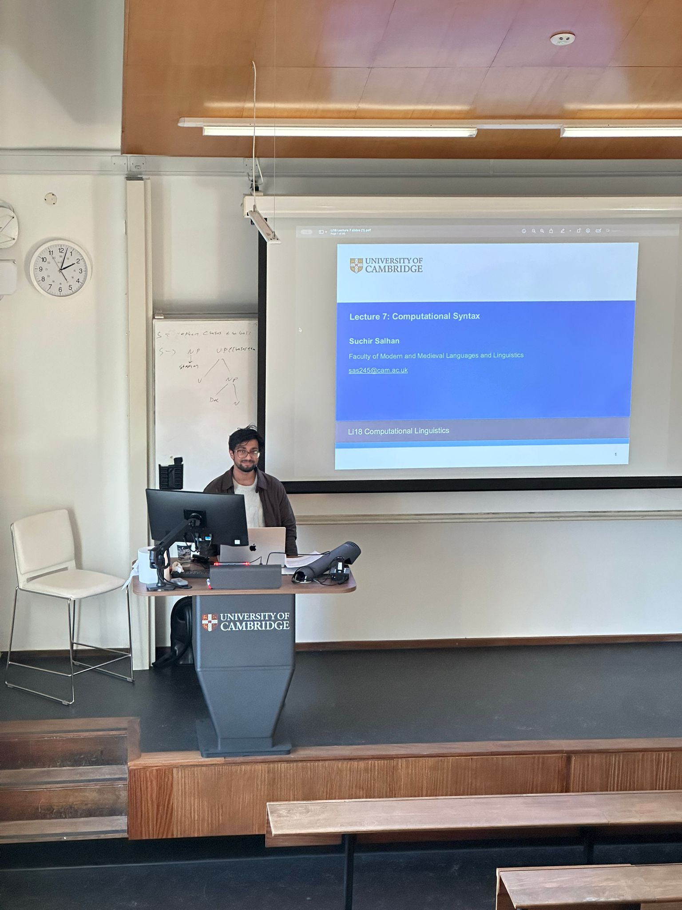
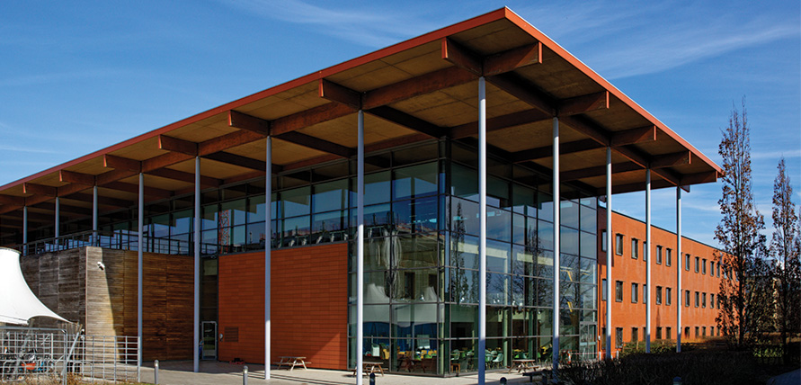
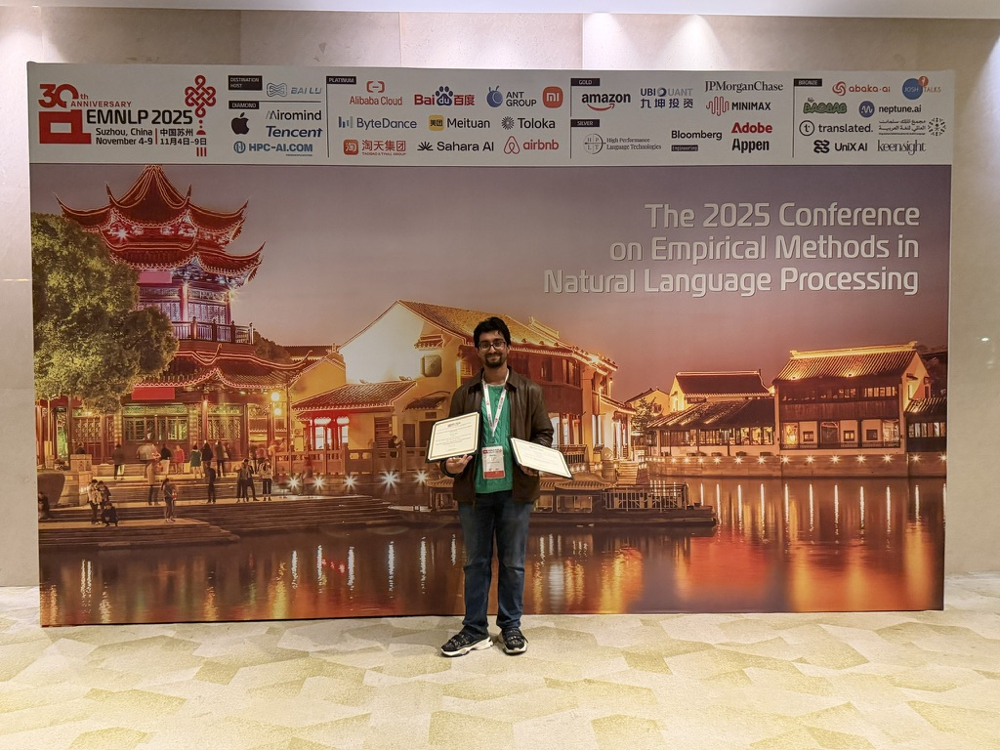
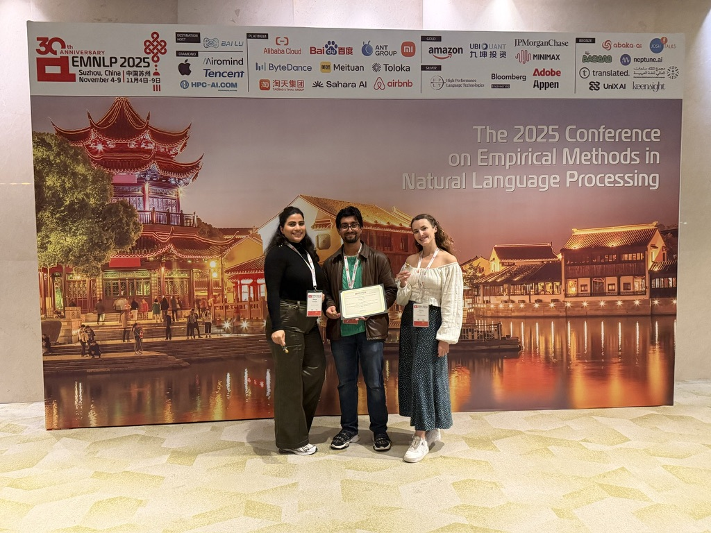
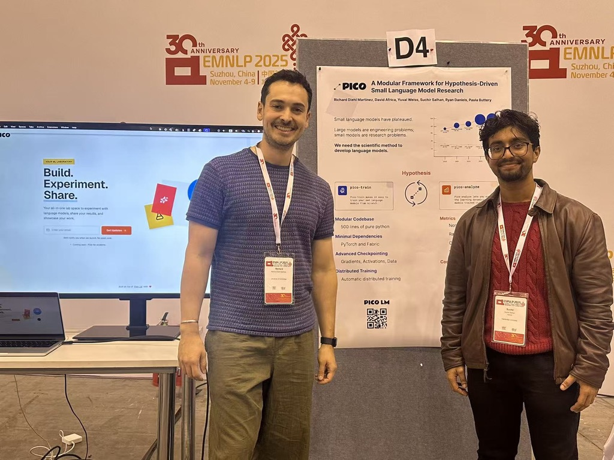

About me
 click to read more
click to read more
Suchir Salhan is a PhD candidate at the University of Cambridge +
click to read more
Suchir Salhan is a PhD candidate at the University of Cambridge +

My work is guided by a single central question: how do intelligent systems learn? I ask it across minds and machines at once, tracing the same puzzle through human and machine learning, language and intelligence, cognition and computation. Language is where these threads meet: it offers rich structure (syntax, semantics, morphology, phonology) alongside decades of developmental theory, cross-linguistic variation, and behavioural evidence against which learning can be measured.
I’ve had a long fascination with the intersection of language and computation—how humans have developed the capability to acquire natural language to communicate, learn, and reason, despite the diversity of linguistic systems; and how we might build machines that can do the same. I arrived in Cambridge in 2020 to pursue a BA and MEng in Computer Science & Linguistics at Gonville & Caius College, Cambridge, where I earned a “starred First” and a Distinction.
I got into research early, and slowly the two worlds stopped competing. This is what my work is about — minds and machines: cognition, language and learning on one side; AI, agents and small models on the other; and, between them, questions of interpretability, representation and behaviour. My master’s thesis pulled me into BabyLM, and the BabyLM cinematic universe is expanding. I co-organise BabyVLM. At first glance, a small language model looks like a weaker version of a large one. I think that misses the point. So rather than asking only “How good is the model?”, I became interested in a different question.

Get in touch
Say hello 👋
Always happy to hear from students, collaborators, and anyone curious about small language models — drop me a line.
Research Interests

click to read more
My research sits at the intersection of Machine Learning, Cognitive Science, and Linguistics, with a particular focus on developing Small Language Models. +

click to read moreMy research sits at the intersection of Machine Learning, Cognitive Science, and Linguistics, with a particular focus on developing Small Language Models. +
My Research Agenda

How do models learn?
How does language shape learning?+
What representations emerge?+
Can we trust small AI?+
Addressing these questions are directly beneficial for the AI community and stakeholders using AI in their systems. My work helps stakeholders build mergeable, efficient small models and agentic pipelines that are cheaper to deploy than frontier systems. More generally, I aim to contribute to the AI community by understanding and building a foundation for multilingual, fairer AI that reaches beyond English into under-served languages and build more human-centered AI that is culturally-adaptive, safe, fair and trustworthy.
Research Themes
- Cognitively-Inspired Design & Evaluation — developmentally plausible models & evaluation.
- Pretraining & Interpretability — learning dynamics of small LMs via Pico.
- Multilinguality — human-scale, cross-lingual, bilingual competence via Beetle.
- Tokenization — information-driven subword segmentation (ByteSpan).
- Alignment & Interaction — pedagogical alignment, student proxies.
- Cognitive Science & Linguistics — grammar induction, cross-lingual phonology.
Explore my Research & Publications
Research Impact

I study how small language models learn languages, using a collection of 330 open-source models trained in different bilingual and monolingual settings, known as BEETLE. +

Latest
Invited Talks & Seminars
- X-PPL-26 — Crosslinguistic Perspectives on Processing & Learning, Bayonne — 2026
- Language & Multimodal Processing Group, University of Copenhagen (with Dr Diana Galvan-Sosa) — 2026
- Sheffield NLP — Understanding the Human-Scale AI Frontier — 2026
- 13th Conference on the Mental Lexicon, McGill University — Invited Keynote — 2025

Work with me
Work with me.
At Cambridge?
I enjoy working with students and collaborators from a wide range of disciplines.
If you're a computer scientist
If you're a linguist
If you're interested in cognitive science
If you're interested in education
If you're interested in AI more broadly
And if you're working somewhere in between?

Teaching & Supervision
I lecture and supervise several courses in Cambridge. +
I also organise the Cambridge Natural Language Processing Seminars (NLIP), which take place every Friday at midday in the Computer Lab and are open to the public. Please feel free to attend if you are interested!
Teaching & resources